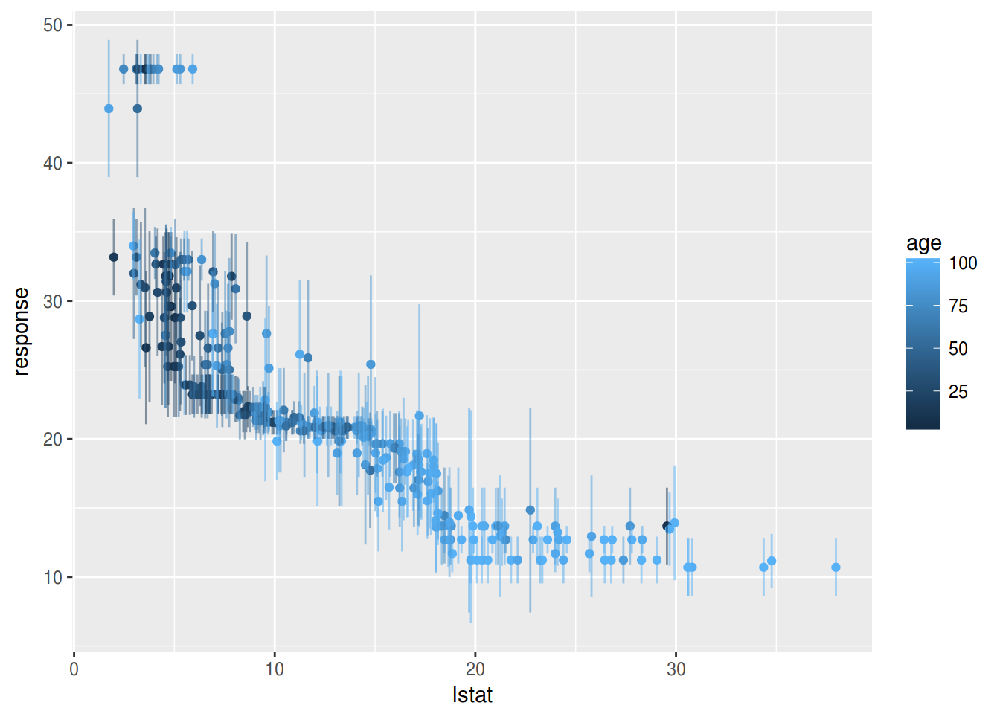

One reason why random forests perform so well is that they are using bagging as a technique to gain more stability. But why do you want to limit yourself to the classifiers already implemented in well known random forests when it is really easy to build your own with [%mlr]?
Just bag an [%mlr] learner already [&makeBaggingWrapper].
As in a random forest, we need a Learner which is trained on a subset of the data during each iteration of the bagging process. The subsets are chosen according to the parameters given to [&makeBaggingWrapper]:
bw.iters On how many subsets (samples) do we want to train our Learner?bw.replace Sample with replacement (also known as bootstrapping)?bw.size Percentage size of the samples. If bw.replace = TRUE, bw.size = 1 is the default. This does not mean that one sample will contain all the observations as observations will occur multiple times in each sample.bw.feats Percentage size of randomly selected features for each iteration.Of course we also need a Learner which we have to pass to [&makeBaggingWrapper].
lrn = makeLearner("classif.rpart")
bag.lrn = makeBaggingWrapper(lrn, bw.iters = 50, bw.replace = TRUE, bw.size = 0.8, bw.feats = 3/4)Now we can compare the performance with and without bagging. First let’s try it without bagging:
rdesc = makeResampleDesc("CV", iters = 10)
r = resample(learner = lrn, task = sonar.task, resampling = rdesc, show.info = FALSE)
r$aggr## mmce.test.mean
## 0.3083333And now with bagging:
rdesc = makeResampleDesc("CV", iters = 10)
result = resample(learner = bag.lrn, task = sonar.task, resampling = rdesc, show.info = FALSE)
result$aggr## mmce.test.mean
## 0.2442857Training more learners takes more time, but can outperform pure learners on noisy data with many features.
In case of a classification problem the predicted class labels are determined by majority voting over the predictions of the individual models. Additionally, posterior probabilities can be estimated as the relative proportions of the predicted class labels. For this purpose you have to change the predict type of the bagging learner as follows.
bag.lrn = setPredictType(bag.lrn, predict.type = "prob")Note that it is not relevant if the base learner itself can predict probabilities and that for this reason the predict type of the base learner always has to be "response".
For regression the mean value across predictions is computed. Moreover, the standard deviation across predictions is estimated if the predict type of the bagging learner is changed to "se". Below, we give a small example for regression.
n = getTaskSize(bh.task)
train.inds = seq(1, n, 3)
test.inds = setdiff(1:n, train.inds)
lrn = makeLearner("regr.rpart")
bag.lrn = makeBaggingWrapper(lrn)
bag.lrn = setPredictType(bag.lrn, predict.type = "se")
mod = train(learner = bag.lrn, task = bh.task, subset = train.inds)With function [&getLearnerModel], you can access the models fitted in the individual iterations.
head(getLearnerModel(mod), 2)## [[1]]
## Model for learner.id=regr.rpart; learner.class=regr.rpart
## Trained on: task.id = BostonHousing-example; obs = 169; features = 13
## Hyperparameters: xval=0
##
## [[2]]
## Model for learner.id=regr.rpart; learner.class=regr.rpart
## Trained on: task.id = BostonHousing-example; obs = 169; features = 13
## Hyperparameters: xval=0Predict the response and calculate the standard deviation:
pred = predict(mod, task = bh.task, subset = test.inds)
head(as.data.frame(pred))## id truth response se
## 2 2 21.6 21.92209 1.264891
## 3 3 34.7 33.47635 1.885779
## 5 5 36.2 32.99649 1.525766
## 6 6 28.7 25.24259 3.618335
## 8 8 27.1 14.45372 3.477059
## 9 9 16.5 13.92330 4.161632In the column labelled se the standard deviation for each prediction is given.
Let’s visualise this a bit using [%ggplot2]. Here we plot the percentage of lower status of the population (lstat) against the prediction.
library("ggplot2")
library("reshape2")
data = cbind(as.data.frame(pred), getTaskData(bh.task, subset = test.inds))
g = ggplot(data, aes(x = lstat, y = response, ymin = response-se, ymax = response+se, col = age))
g + geom_point() + geom_linerange(alpha=0.5)